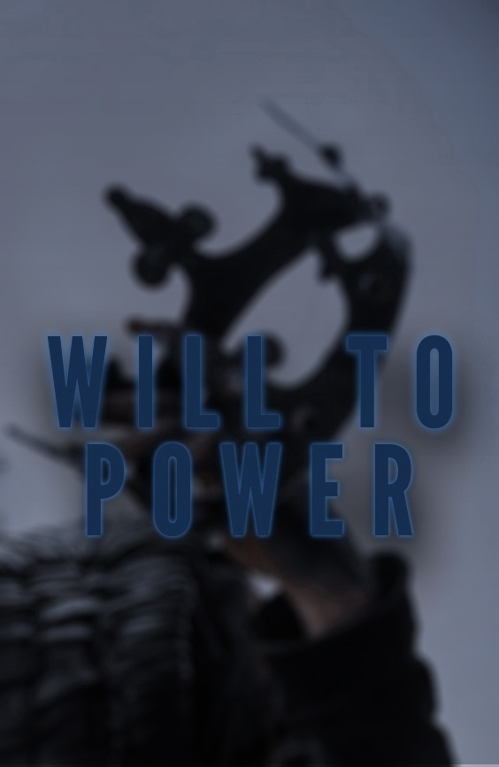
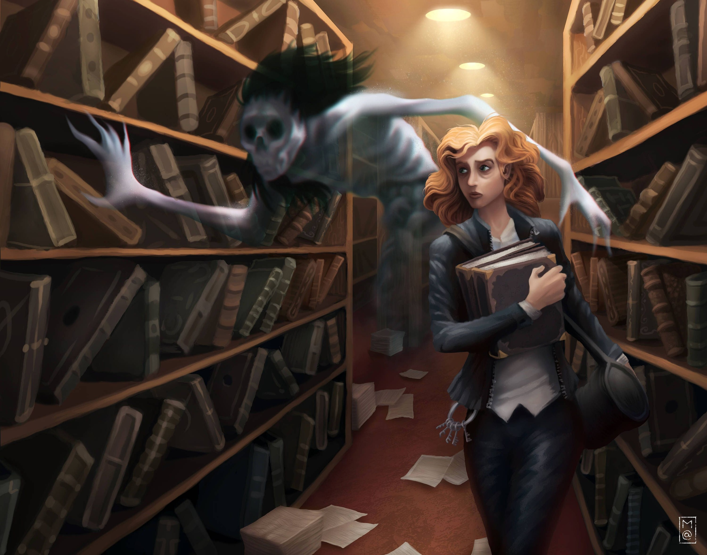
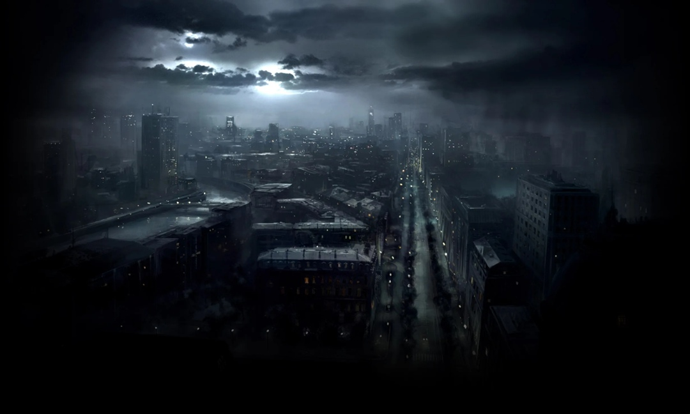
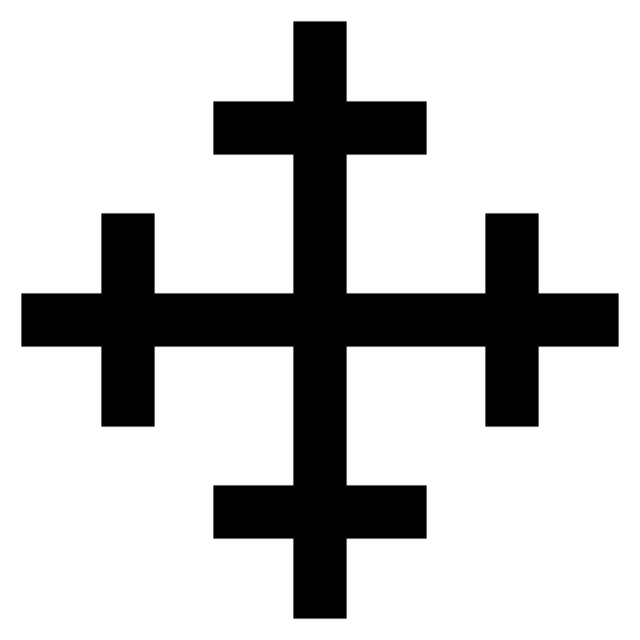

Homo Novus. Маги.

Вы решили при помощи своего дара удовлетворять свои фантазии. Вы избрали то, что вредит другим людям, опасно для мироздания и малопонятно большинству людей. Это значит, что вы приняли на себя роль, которая ставит вас над законом, даже не имея на это права. Поймите, я тут не для того, чтобы вредить вам, ломать вас или обвинять в неправоте. Вы здесь потому, что сделали важный выбор — вы решили контролировать свою жизнь. Сделав это, вы предприняли шаг, который большинство людей не делают никогда.
Оглавление
Магия. Что же это такое? Уникальный природный феномен, необъяснимый с позиций человеческой науки, или простой вымысел — результат больного воображения древних наших предков? Человечество верит в отсутствие магических сил уже много тысячелетий. Для этого не нужны ни чернокнижники, ни проклятые колдуны. Достаточно зерна здравого смысла и наличие учебника по физике. Но так ли это на самом деле?
Мир пропитан ложью и единственная правда здесь — это законы самого Гобелена. Я приоткрою вам завесу тайны. Не столько из тщеславия, сколько из простого уважения к молодым моим братьям и сестрам. Ибо мои исследования предполагают пребывание в этом мире на протяжении нескольких поколений. Кто я такой или такая не имеет никакого значения. Я лишь Осколок Души, пробудившийся Аватар того, кто подарил нам возможность изменять Гобелен своей Волей.
Гобелен – метафора, описывающая Вселенную в целом.
Вы сейчас ничего не понимаете, ибо только недавно пробудились. Всему свое время, а пока я начну с истории. С истории Возрождения.
История Возрождения.
Как бы не прискорбно звучало, но мы это не мы в привычном понимании. Наша душа слилась с душой прародителя, получив осколочек духовной энергии, его Волю к власти, Жажду к знаниям. Оно изменило нас так, что мы, маги, выпали из тканей Гобелена, став сторонними наблюдателями, которые могут взаимодействовать со Вселенной, касаясь ее нитей.
Кто такой наш прародитель никто не знает. Его имя стерлось из истории, сгорело под пламенем Мира, остался только пепел, по которому мы можем предполагать и судить. Самая популярная и общепринятая версия происхождения прародителя и самой магии — это психофизический феномен, спровоцированный вспышкой активности Сверхсознания. И это Сверхсознание — наш прародитель. Суть такова, что когда Вселенная зародилась вместе с первыми людьми, появился и тот, чья Вера и Воля была сопоставима с небесными законами и началом мира. Он мог творить. Касаться нитей Гобелена, изменять его своим желанием и волей. Однако, где есть сила, есть и противодействие. Мир противился всем своим нутром, вся сущность заключалось в единоличной воле изначального создателя. И Гобелен обрушил на прародителя всю мощь, вызвав тем самым Резонанс. Мир стер нашего отца, загасил его своим дыханием и выплюнул из себя, как грязную тряпицу. Но все же не конца. Осталась душа, расколовшаяся ровно на 50 осколков, каждый из которых разлетелся по Земле и пробудился в 50 людских душах, сливаясь с ней и даря Аватар
Аватар – осколок духовной энергии, объединенный с душой человека и благодаря которому маг может творить магию.
Сколько осколков — столько и магов, ровно 50 на всем Земном шаре. Не стоит говорить, что это чертовски мало, вы это и сами понимаете.
Общепринятая версия хоть и популярна, но вызывает комья сомнений и толику скептицизма в своей непроработанности и огромных дырах. Она ничего не объясняет и не дает ответов на вопросы. И самая главная проблема этой теории в отсутствие альтернативных. Никто, ни маги прошлого, ни маги настоящего не сопоставили других версий, хоть и по правде говоря попытки были, безуспешные. Они разбивались о постоянное количество магов, не зная как это объяснить.
Резонанс, Консенсус и Парадигма.
Мы точно не знаем свое происхождение, но мы знаем о константах, определяющих нашу модель поведения в обществе. Кажется, магом быть просто, взял и творишь чудеса. Это не так. Сам Мир противится, мешает, пытается уничтожить мага за его попытки сотворения по своей воли. Этот процесс называется Резонанс.
Резонанс — отдача реальности, сопротивляющейся магическим изменениям. Резонанс может нанести как прямой удар по магу сразу, который он почувствует, так и сложиться незаметно и постепенно для него.
Чтобы определить природу резонанса и в чем он заключается, необходимо сначала обратиться к другому понятию. К понятию Консенсуса.
Консенсус - это термин, используемый магами для обозначения преобладающей консенсуальной реальности, созданной убеждениями людьм
Мир — глина для лепки. Он изменчив, он формируется под убеждения разумных существ, зачастую бессознательно. Реальность здесь — это то, во что верит большинство людей. Чтобы маг мог творить магию, он должен навязать миру свою веру, сражаясь с миллиардами умов, чьи убеждения формируют Консенсус. И когда маг идет против этого большинства, творя магию, привычное представление людей рушится, словно карточный домик, под ударами его слов. Маг противоречит Консенсусу, и Мир дает отпор в форме Резонанса.
Магию было легче практиковаться в Средневековье, когда большинство людей действительно верили в суеверия и фольклор. Маги могли с относительной легкостью произносить мощные заклинания перед смертными свидетелями. Однако сейчас, в современную эпоху, магам необходимо манипулировать убеждениями Спящих, чтобы создать гораздо более статичный и упорядоченный Консенсус, основанный на науке и разуме.
Спящий – человек, еще не Пробудившийся полноте сверхъестественного мира и который может являться будущим сосудом для Аватара.
Так в чем же заключается Резонанс? Это довольно сложный вопрос. Нам еще не удалось до конца понять его природу. Версии разные, от критического влияния на ноосферу до открытия пробоин от магии в тканей мирозданий, которые вредят миру угрозой вторжения инородных созданий. Но факт остается фактом, мир противится. Причем противится только магам. Например, вампиров с их дисциплинами или оборотней с духовной связью, Гобелен не наказывает, он молчит, игнорирует их влияние на себя. Они прописаны в тканях Вселенной, они часть его, а мы — нет, мы — чужие для него.
Резонанс — пагубное влияние Вселенной на нас за открытое использовании магии, противоречащей Консенсусу. Чем больше или сильнее ты нарушаешь Консенсус, тем следовательно сильнее эффект Резонанса. Истончается плоть и искажается душа — и в конце концов мага ждет исчезновение из мира.
Это главная проблема каждого мага. Силы Резонанса могут вообще начать действовать от одной только ауры могущественного мага, не дожидаясь, когда он сотворит заклинание. Так что носители Аватара придумали несколько способов борьбы с ним.
Прежде всего, они пытаются маскировать свою магию под нечто привычное, то, что не вызовет лишних вопросов у обывателей. Огненные шары маскируют под взрывы газопровода. Живительные эликсиры выдают за обычные лекарства. Маги могут спокойно колдовать и перед теми людьми, которые сохранили магическое мышление. Поэтому некоторые специально культивируют неграмотность в некоторых районах, чтобы в открытую использовать магию.
Но есть есть один гарантированный способ, как побороть Резонанс— магу нужно сойти с ума настолько, что галлюцинации будут воплощаются в реальности. Таких сумасшедших считанные единицы из 50, и на них самих не действует Резонанса — вместо этого силы Резонанса воздействуют на всё окружающее.
Есть еще один ограничитель у магов. И это их собственный мозг, а точнее убеждения, взгляд на мир, их парадигма.
Парадигма — способ, которым маг понимает магию и включает ее в свою более широкую интерпретацию реальности.
Парадигма — больше, чем простая выжимка взглядов мага. Это стиль, это язык, на котором он обращается со своим Аватаром. Единственное, что ему нужно по-настоящему для сотворения чуда – это воля, которой он воздействует на реальность, знание подходящих Столпов и парадигма, которой он фокусирует это желание и воплощает его в реальность.
Перед тем, как сотворить что-то по своей воли, это нужно привести в соответствие с парадигмой мага. Например, неверующий в загробную жизнь человек никогда не сможет поднять мертвый труп – это противоречит его парадигме. Или же взять пример мага, рассматривающего Вселенную как своего рода компьютерную программу, информационную среду, которую он перепрограммируют с помощью различных гаджетов. И если его лишить этого гаджета, то он ничего не сможет сделать, абсолютно.

Естественная и непристойная магия.
С завершением Средневековья, ограничения, накладываемые миром на магию, значительно возросли. Когда-то Резонанс первым магам не грозил вообще, поскольку общей, устоявшейся реальности тогда не существовало. Спустя века, неконтролируемый рост численности человечества, объединивший — с помощью средств массовой коммуникации — планету, создал как мировое сообщество, так и мировую реальность. Когда человечество жило в изолированных уголках, его переменчивые взгляды дозволяли существование действительно могущественной магии. Теперь же, всемирно общая распространенность мнений о невозможном, работает на разрушение возможностей Аватара. Магия разделилась на непристойную и естественную.
Непристойная магия.
Непристойная Магия – магия, которая нарушает «законы реальности», вроде метания огненных шаров, полетов или превращения кого-либо в лягушек.
Непристойная магия, также известная, как вульгарная, является результатом принуждения магом реальности к признанию его ожиданий. Используя эту магию, маг метает с кончиков пальцев молнии или превращает врагов в ледышки. В период Ренессанса такая магия была признана непозволительной, ибо подобное безрассудное колдовство рвет ткань Гобелена реальности, что вызывает не самые приятные последствия.
Для непристойной магии нет логического объяснения. С точки зрения Спящих, которые могут ее увидеть, подобное совершенно невозможно. Статичная реальность не выносит такую магию и использующих ее магов. Использующему такую магию волшебнику придется платить – Резонансом.
Обычно маги используют непристойную магию только в случаях жизни и смерти. Считайте вульгарную магию тактическим ядерным зарядом общества людей. Она опасна, грязна и имеет долговременные последствия. Те маги, что вольно используют ее силу, не остаются проблемой надолго.
Естественная Магия
Естественная Магия – магия, замаскированная под естественный процесс. Такая магия выглядит, как будто «произошла сама по себе».
Естественная магия – единственный выбор мага, желающего прожить достаточно долго. Маскируя магические эффекты под случайные совпадения, маг работает так, что обыватели не замечают ничего особенного. Считайте естественную магию водой, текущей с возвышения – чтобы достичь низа, она будет обтекать препятствия.
Маг определяет суть желаемого и наполняет ее энергией, а определение формы эффекта он предоставляет самой вселенной. В столкновении с врагом, маг может поработать с окружающими его силами, и дождаться результата, вроде взрыва неисправного газопровода.
Менее правдоподобные совпадения делают магию более сложной. Чем больше происходит «совпадений», тем более неестественной становится сама их возможность. Это может закончиться тем, что принято называть «Эффектом Домино».
Однако, если изобретательный маг аккуратно использует естественную магию, то он может найти способ сделать магию незаметной, и обнаружить, что статическая реальность гораздо меньше бунтует против подобных незаметных изменений. Скрывая магию в событиях, которые Спящие сочтут возможными, маг обнаружит, что его колдовство принимается коллективным бессознательным человечества.
9 Столпов Гобелена
in progress
Нынешнее положение Магов в обществе.

Общество магов разрознено из-за своего мизерного количества, но все-таки оно позволяет себе ненужный внутригрупповой фаворитизм. Разделение на своих и чужих происходит в борьбе за место под солнцем, в магически неравноправном экономическом подсчете. Оно достигает апогея, когда немногочисленные маги объединяются под эгидой общих интересов, целей, в конце концов Парадигме. Легко быть другим, когда рядом есть такие же другие. Маги, что объединились по принципу общих магических взглядов, основали свои организации и общие системы магии. Из этого фундамента выросли две группы магов — одна из них никак не может смириться с фактом лишения своего былого величия и пытается восстановить его, вернув ту эпоху, когда человечество еще верило в Магию. Другая собственноручно создала реалии нынешнего Мира, приспособилась к нему и поддерживает в обществе относительное спокойствие, а также всячески культивирует среди людей и магов неверие в Магию, борясь с ней. Название им — Черные Кресты и Ковенант соответственно.
Черные Кресты.

Нынешнее общество диктует магам скрывать свою магию, приспособиться быть серым и незаметным, прятать свою силу, ведь лишнее ее проявление грозит страшными последствиями. Но так было не всегда. В эпоху Средневековья, когда человечество было суеверным и забитым, когда все были скованы страхом перед темными силами, маги имели куда большую свободу. Тогда они без страха Консенсуса могли творить чудовищные по силе заклинания и буквально подавлять Волю Гобелена. Однако, всему приходит конец, от былого величия не осталось и следа. Наступила эпоха технологий, тотального контроля и научного скептицизма.
Рефлексируя по былым временам, отдельные от других маги на территории Африки и Ближнего Востока начали культивировать неграмотность среди населения, внушать веру в суеверия и магию в целом, чтобы среди них без опаски творить волшебство. Так в некоторых умах зародилась концепция принужденного уничтожения Консенсуса – вернуться к истокам и воссоздать искусственным путем тот самый мир, где маги являлись малочисленной элитой, управляющими неотесанными дикарями.
Эти маги основали организацию Черные Кресты. Они малочисленны даже по меркам магов, но благодаря поиску и вербовке недавно Пробужденных их влияние растет каждые десятилетия. Структура организации не вполне ясна, она похожа скорее на секту, чем на орден. Судя по некоторым сведениям, Черные Кресты за свою небольшую историю (начиная с 16 века) ответственны за рождение фашизма в Италии и Германии, а также последующей помощи нацистской Германии в войне. Помимо этого они поддерживают диктатуру в странах третьего мира, где ряд мощных религиозных организаций пытаются воссоздать альтернативную экономику и культуру на основе доктрины «необразованности».
Ковенант.
Eще в 14 веке группа магов задалась целью побороть мистицизм ради торжества науки и разума, чтобы истребить
традиционную магию и ослабить влияние сверхъестественных сил на человечество, сделав жизнь человека гораздо
лучше. Они пропагандировали идею возвышения всего человечества, а не только отдельных его представителей. По
их мнению к общепризнанной науке с успехом может приобщиться каждый, в отличие от магических практик.
Медленно и упорно эти маги помогали обычным людям «бороться» с магией, культивируя свои идеалы по всему миру
— и спустя пару столетий сумели добиться впечатляющих результатов.
Наступил прогресс, что улучшил благосостояние людей и усилил тем самым Резонанс.
Так родился Ковенант. Они собственными усилиями помогли уверовать людей в научную картину мира — и Резонанс
начал действовать по полной на тех, кто пытался при всех пользоваться магией по старинке.
Ковенант достиг своей цели, поборол магию, но не ослабил сверхъестественное влияние на людей.
В нынешнее время Ковенант защищает население от опасных открытий и расширяет границы человеческого знания. Маги Ковенанта реагируют на любую опасность с пылким рвением, уничтожая противников при любой возможности. Лично Ковенант занимается лишь устранением неугодных магов, а когда речь заходит о вампирах или оборотнях, предпочитают действовать руками Охотников, которым тайно помогают.